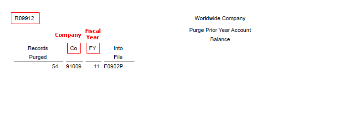

| Purpose |
| Scope |
| Details |
| Program Functionality |
| Setup |
| Prerequisites |
| Processing Options |
| Data Selection |
| Reviewing the Purge Report |
| Post Purge Process |
| Frequently Asked Questions |
This document provides an overview of using the Account Balance Purge (R09912) to purge account balance (F0902) records.
This document is intended for both Technical and Finance Functional users who will be involved in the purge of general ledger data in EnterpriseOne system.
To increase disk space, you can purge account balance records using the Purge Prior Year Account Balances program (R09912). This program:
This report does not have any processing options.
It is mandatory to enter a particular fiscal year for the records that you want to purge. You may further specify Company, Account Id and Ledger Type as optional fields for data selection.

The resulting report shows the number of F0902 records being purged, sorted by Company and Fiscal Year.
After the purge process is complete:
Question 1: Can I remove unwanted budget F0902 records specific to inactive accounts using R09912 report?
Answer 1: You can provide data selection by account ids along with a particular fiscal year while running the R09912 report, but in order for the records to be purged, you need to ensure that the records you wish to purge have dates prior to the current fiscal year.
Question 2 Why is the recommendation made to copy the F0902P to another medium?
Answer 2: The purge programs are designed to increase disk space by deleting Account Balance (F0902) records that are no longer needed on a daily basis. Disk space should be evaluated prior to executing the purge program. The program will copy records from the F0902 to the appropriate purged file and will utilize more disk space until the purged files can be removed. Its recommended you should copy the F0902P table to another medium to save on disk space.
Question 3: If the F0902P is not moved to another medium and the purge is run again, are the records added to the table?
Answer 3: If you keep this table on your system and you purge again, the system adds newly purged records to the existing records in the F0902P table. However, this defeats the overall purpose of the purge in reducing disk space. In order to reduce disk space, the table should be copied to another medium.
Question 4: Where do I find additional information on available purge programs within EnterpriseOne?
Answer 4: Please refer to Archive and Purging within EnterpriseOne for more information.